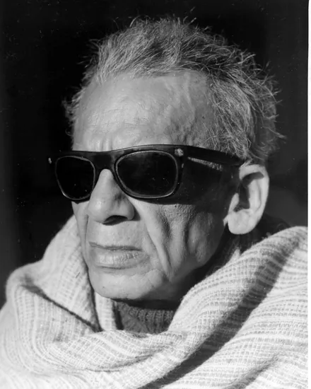

Artists · Muralist
Benode Behari Mukherjee
1904–1980
One of Kala Bhavana's first students, who covered the walls of Hindi Bhavana with the medieval saints of India in 1946 and 1947.
His story
The muralist who painted from memory
In 1957 an operation left him blind. He kept working, with paper cut-outs, drawings and even murals, guided by memory and touch.
Satyajit Ray, once his student, made a film about him, The Inner Eye, in 1972.
Where he stands
The circle around him
 His teacher
Nandalal Bose
1882–1966
Taught him at Kala Bhavana.
His teacher
Nandalal Bose
1882–1966
Taught him at Kala Bhavana.
This page Benode Behari Mukherjee 1904–1980 One of Kala Bhavana's first students, who covered the walls of Hindi Bhavana with the medieval saints of India in 1946 and 1947.
In the house
Not yet in our care
We do not hold a work by Benode Behari Mukherjee yet. His story is part of ours all the same, and you can follow it through the story of Bengal art.
Write to us
A work in your family?
If your family has kept a work by Benode Behari Mukherjee, we would be honoured to learn about it, with no obligation of any kind.